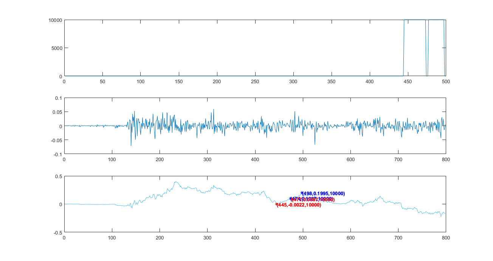
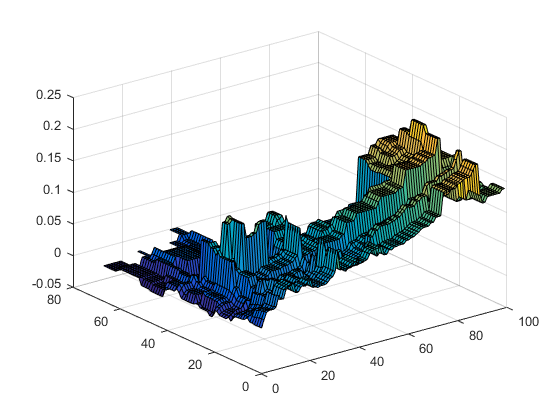
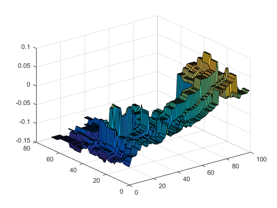

cd 'C:\Users\章鱼哥\Desktop\证券分析'
rawdata=readdata('001302.xlsx');
chongfucishu=100;
yingtoubi(1:chongfucishu,1:chongfucishu)=1;
for i=1:chongfucishu
for j=1:chongfucishu
diefu=i/1000;
zhangfu=j/1000;
[synum,maxbenjin,nomove] = analys(diefu,zhangfu,rawdata,1,438,500);
yingtoubi(i,j)=synum/maxbenjin;
end
end
maxyingtoubi=max(yingtoubi);
maxyingtoubi=max(maxyingtoubi)
[i1,i2]=find(yingtoubi==maxyingtoubi);
diefu=i1/1000
zhangfu=i2/1000
[synum,maxbenjin,nomove,beitaojiner] = analys(diefu,zhangfu,rawdata,1,438,500,1)
synum/maxbenjin
rawdata(500,2)-rawdata(438,2);
figure()
Z=yingtoubi;
[X,Y]=meshgrid(1:chongfucishu, 1:chongfucishu);
surf(X, Y, Z)
figure()
Z=yingtoubi-nomove;
[X,Y]=meshgrid(1:chongfucishu, 1:chongfucishu);
surf(X, Y, Z)
maxyingtoubi =
0.2114
diefu =
0.0230
0.0240
0.0250
0.0260
0.0270
0.0280
0.0230
0.0240
0.0250
0.0260
0.0270
0.0280
zhangfu =
0.0880
0.0880
0.0880
0.0880
0.0880
0.0880
0.0890
0.0890
0.0890
0.0890
0.0890
0.0890
synum =
2.1136e+03
maxbenjin =
10000
nomove =
0.1236
beitaojiner =
0
ans =
0.2114
  